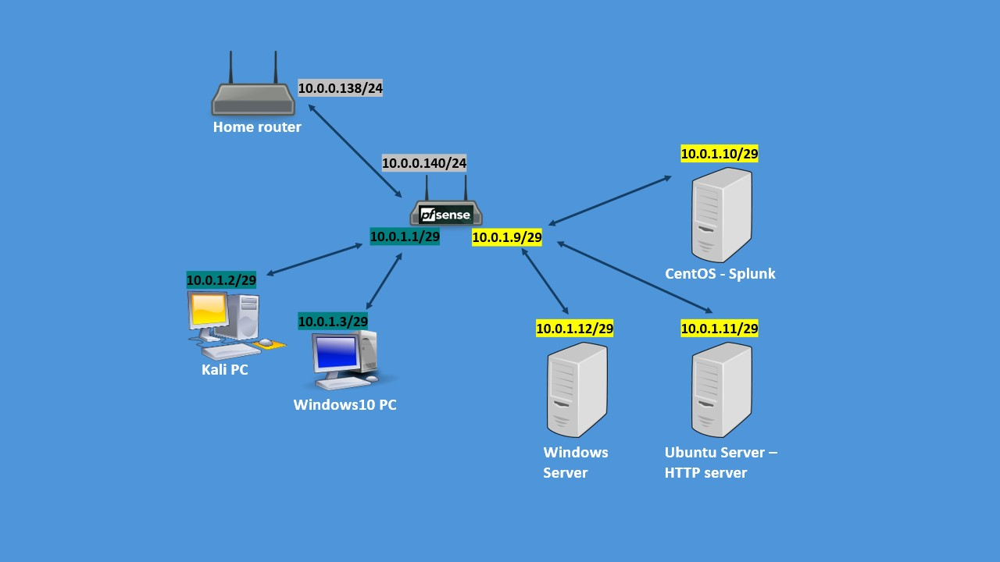

In the ever-evolving field of cybersecurity, effective learning combines theory with hands-on practice. This is where a lab environment becomes essential. In this article, I will guide you through creating a simple yet powerful cybersecurity lab on your home PC.
This guide is made for beginners who know a bit about cybersecurity and want to use what they've learned, as well as intermediate learners looking to test new tools and expand their skills.
What we will use?
Hardware requirements
For this setup, I'm using my desktop PC, which features:
- Processor: AMD Ryzen 5 7600 (6 cores)
- RAM: 32 GB (16 GB can enough for smaller setups)
Software requirements
In my lab, I will simulate an environment consisting of:
- VirtualBox: A free Type 2 hypervisor that enables the management of virtual machines.
- pfSense: A free, open-source operating system based on FreeBSD, designed to function as a firewall and router.
In my lab, I will simulate an environment consisting of:
- Windows server
- One Windows client machine – I recommend to use windows 10 for less resource usage.
- A Kali Linux machine – This machine is going to be an attacker machine for future attack simulations on the network.
- An Ubuntu Server for future projects – This is for my future projects.
Network setup
The network configuration will emulate a small enterprise environment, segmented for enhanced security and management.
Network segmentation
One best practice in cybersecurity is to separate the network into distinct segments. In my setup, there are two primary segments:
- Clients segment: 10.0.1.0 Network - This segment contains regular desktop PCs running Windows 10, simulating typical end-user environments. In my lab there is also a Kali linux machine to simulate an attacker in the network.
- Servers segment: 10.0.1.8 Network - DMZ (Demilitarized Zone), in this segment there is no access to the internet and there is stricted access to the clients segment. In this segment I located all the servers and the Splunk SIEM machine